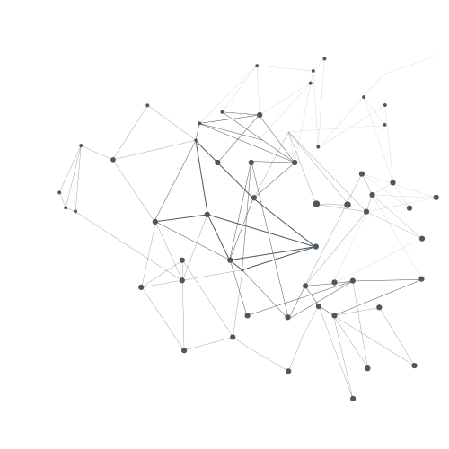

<div id="modal-content-wrapper">
	<mat-icon [mat-dialog-close]="true">close</mat-icon>
	<div class="bulletpoints">
		<p id="bullet1">fast and real-time prediction</p>
		<p id="bullet2">easy to read data</p>
		<p id="bullet3">accurate and reliable</p>
	</div>
	
	<span id="description">{{ featureDescriptionPath | translate }}</span>
  
</div>
